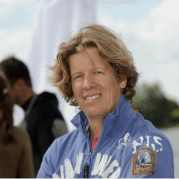
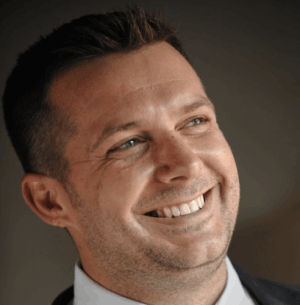
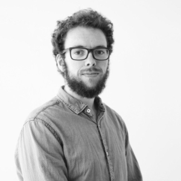
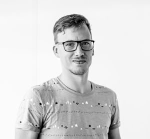
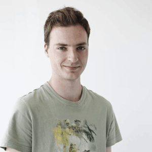

MEET OUR FANTASTIC TEAM
Many ThreeFold team members are part of the initial startup team. After project kickstart new fully dedicated mamers will join the team.

Kristof De Spiegeleer
The world needs positive change and many people like you and I want and can make that difference. The world today is comprised mostly of pyramids where a few people control the many and fear is the main instrument of that control. Many don't accept this any longer. Many want freedom and respect for all humanity, our planet and it's resources. However, there needs to be a structural change if we are to see such change and this needs to come from within all of us.
We want to help bring change. We are investing in Threefold as much of our own personal resources as we possibly can (both time and money). Our proceeds on our investment in ThreeFold Tech will be used for good causes as well.
Visionary entrepreneur and humanist giving back to the world through technology

Chris Hutton
Focussed on assessing market trends and demands and consequently researching niche and innovative technologies with the potential to meet those demands. Business Development and operational management have been my core focus.
The last 25 years in IT has shown me the potential of technology to make an impact on real world issues. I was born in Africa and I have seen first hand the poor levels of education and general access to information within this third world economy.
Can you imagine what can be achieved by allowing affordable internet access for the billions of people who simply don't have access to what we consider to be a daily prerequisite? Can you imagine how we can improve the lives for so many by affording them unrestricted access to information and education?
A serial entrepreneur and technology fanatic always up for a new challenge
Adnan Fatayerji
A global citizen, born in the UK and lived in multiple countries over the course of my career. At an early age started a successful manufacturing franchise in the Middle East and later evolved my passion into successful technology ventures. Experience from past ventures, have enabled me to navigate multiple roles to support organizational growth with a focus on big picture strategy, business development and operational execution.
I'm a true believer in ThreeFold because it can enable a future that's inclusive and responsible for all of humanity. It can help connect billions of people who simply don't have identities, a method of exchanging value or access to our digital libraries. ThreeFold is not a only a paradigm shift in internet technology, it’s a universal shift in digital ethics by embodying responsibility in its design, values and code.
A serial entrepreneur; key skill sets are strategy, operations & business development. Currently residing in Ibiza, Spain and Dubai, UAE

Rob Van Mieghem
Rob is passionate about software and technology and how it can help to make the world a better place. He started his career in technology startups and later became a technology consultant where amongst other assignments also worked at a competence center of an internatiol bank for a couple of years. After some years in a pure management position, he returned back to his passion, creating technology. Rob joined Incubaid early 2012, initially as VP R&D at Awingu, later at Mothership 1 and then as VP R&D at Green IT Globe when it was founded. The focus shifted completely to research at Green IT Globe later. Rob has been involved in several Blockchain projects and used to write GPU miners as a hobby.
Blockchain expert

Glen De Cauwsemaecker
Glen is a software developer and mathematician. Together with a diverse and international team he is trying to redefine the world using the power of technology. Glen has lived for a long time in UK and South America, but went back to his roots and is living with his family in Belgium again since 2018. At Threefold he is responsible for designing, developing and testing blockchain technology, with the potential to make the world a better place by using this technology to power a green neutral internet as well as drive the backbone of a decentralized and neutral economic system.
Blockchain expert
Georges Georgiou
Being a finance guy it's all about dollars and sense for me.
Prices to access internet storage and compute capacity today remain prohibitive high for most of the world's population. This is not only about corporate greed, whos mantra probably includes some form of “whatever drives the stock price up is what we do”, but also about the true actual cost of producing such technology today is inherently high.
TF Techs has “restructured” the way cloud is built from the ground up making it “affordable” for the masses. Simply stated, anyone who can do that has my vote.
Brings 25 years of financial experience in multiple fields to the table.

Roel van Sabben
I am a firm believer of equal rights and chances. As the saying goes: “a beautiful mind; a terrible thing to waste”, and this is what’s going on way too much. I think the internet has the potential the become the great equalizer for all… Being part of a movement that supports this cause is something beyond I thought I’d ever do.
A marketeer with a passion for synergy between design and data
Nickolay Babenko
I have never seen such an incredible team of passionate believers with such strong and humane values and at the same time a deeply qualified team working in an environment full of love. If we only take the team factor, I would believe that this team can produce something world-changing.
And in fact, the technology and ecosystem that we are building will change the landscape of internet. I believe it will be the next step of internet and cloud growth and will become a foundation of stable digital economy and responsible freedom. Being on both, engineering and business side I am finding my passion and strong sides in organizing work of talented and professional teams to achieve highest goals with steady and stable progress.
Engineer, crypto-entrepreneur avant la lettre, investor and bhakti-yogi
Daniela Nikolova
ThreeFold is a heart-based foundation. I know the souls of the gardeners who plant and tend to the seeds here each day. I’ve witnessed their kindness, unconditional love, unwavering faith and efforts to make this world a better place. For all. No separation. No doubt. No fear. Only love I’ve seen and felt in their hearts.
The spiritual heart and guide for our team

Lee Smet
Lee is a software developer working on the TF-chain. Before this Lee was mainly involved in the creation of Itsyou.online in his time at GIG.tech. In his spare time, Lee can be found on the soccer pitch in keeping the scoreboard against his team Sint-Anna Lokeren on a steady 0.
Software Engineer